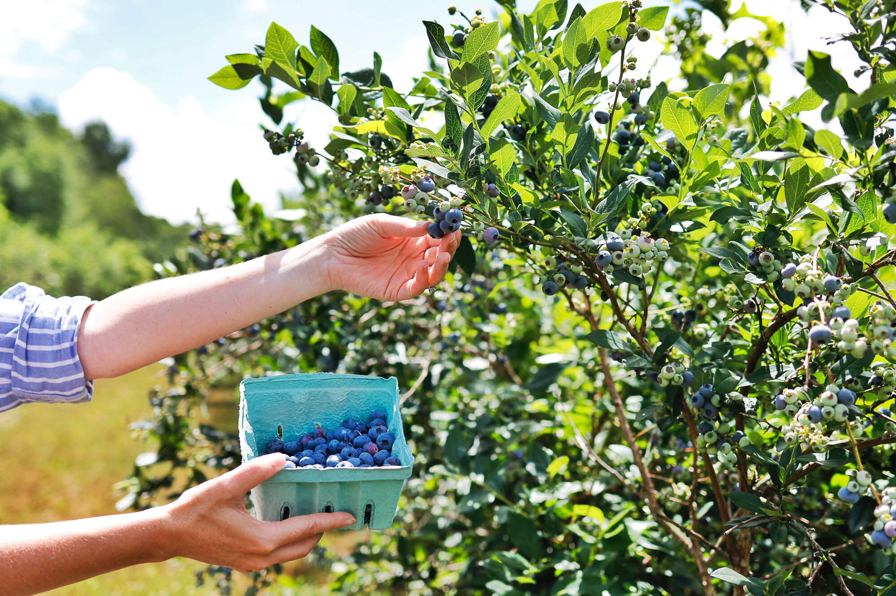

Explore the Orchard
Eleva, Wisconsin is home to a beautiful blueberry orchard that is a must-see for anyone in the area. The orchard is located just outside of town and is surrounded by rolling hills and green pastures. Visitors can pick their own fresh blueberries straight from the vine and enjoy the beautiful scenery.
The orchard is open from early summer until late fall and offers a variety of different blueberry varieties to choose from. The ripe blueberries are a deep blue color and have a sweet and tangy flavor. They are perfect for snacking on, adding to recipes, or even freezing for later use.
Visitors to the orchard can explore the rows of blueberry bushes and pick as many berries as they like. The orchard also offers pre-picked berries for those who don't want to pick their own. In addition to blueberries, the orchard also sells honey and other locally-made products.
Aside from picking blueberries, there are many other fun activities to enjoy at the orchard. You can take a hayride through the orchard, visit the on-site farm animals, or even enjoy a picnic on the grassy lawn. The orchard also offers educational tours for groups and schools, providing a unique and fun learning experience.
Overall, the blueberry orchard in Eleva, Wisconsin is a wonderful destination for families, nature lovers, and anyone looking to enjoy the beauty of the countryside. The fresh blueberries and other locally-made products make for a delicious and authentic Wisconsin experience.
News/Sales
Our blueberry farm is currently having a sale on all of our fresh blueberries. This is the perfect time to stock up on this delicious and healthy fruit. We also have a variety of other locally-made products for sale, including honey, jams, and jellies.
In addition to the sale, we are excited to announce the opening of our new on-site bakery. This bakery will feature fresh-baked goods made with our own blueberries, as well as other locally-sourced ingredients. The bakery will be open daily, offering breakfast, lunch, and snacks.
We are also offering educational tours for groups and schools. These tours provide a fun and informative experience, teaching visitors about the process of growing and harvesting blueberries.
Don't miss out on all the exciting news and sales happening at our blueberry farm. Stop by and see us today!